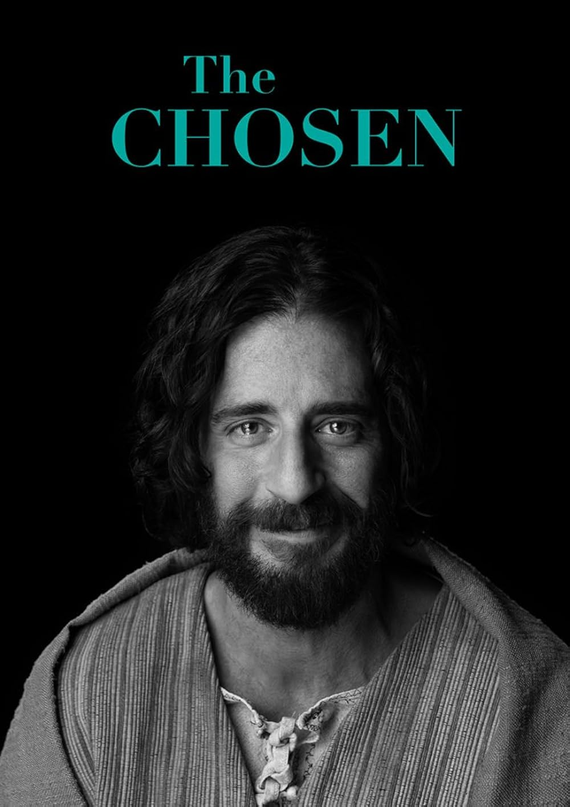

The Chosen
(conhecida no Brasil como The Chosen: Os Escolhidos) é uma série dramática que retrata a vida de Jesus Cristo sob a perspectiva daqueles que o conheceram pessoalmente. Ambientada na Judeia do século I sob a opressão do Império Romano, a produção foca nas histórias de pessoas comuns — como pescadores, cobradores de impostos e marginalizados — cujas vidas mudam ao seguirem Jesus.

The Mandalorian
The Mandalorian, acompanhamos Din Djarin (Pedro Pascal), um caçador de recompensas solitário nos confins da galáxia. Após a queda do Império, ele aceita capturar um alvo de 50 anos chamado Grogu. Em vez de entregá-lo, Mando decide proteger a criança, fugindo de remanescentes imperiais e buscando as origens do garoto.